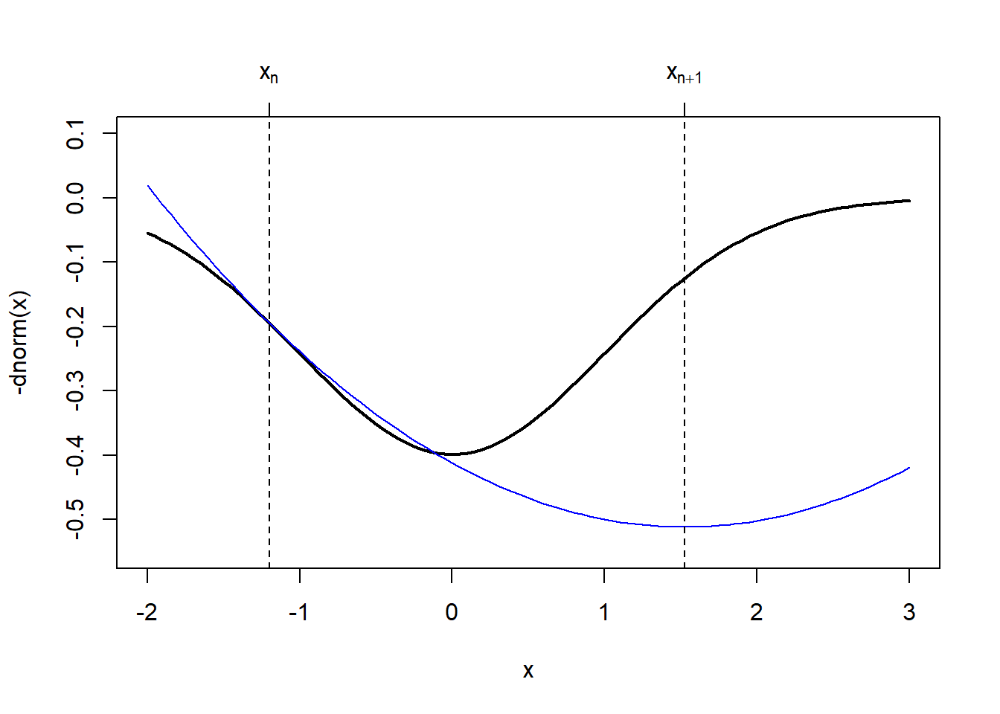
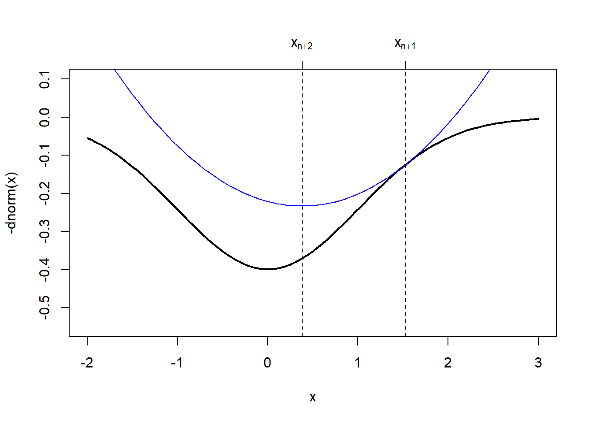

3.2 The Newton Direction
Given a current best estimate \(x_n\), we can approximate \(f\) with a quadratic polynomial. For some small \(p\),
\[ f(x_n + p) \approx f(x_n) + p^\prime f^\prime(x_n) + \frac{1}{2}p^\prime f^{\prime\prime}(x_n)p. \]
If we minimize the right hand side with respect to \(p\), we obtain \[ p_n = f^{\prime\prime}(x_n)^{-1}[-f^\prime(x_n)] \] which we can think of as the steepest descent direction “twisted” by the inverse of the Hessian matrix \(f^{\prime\prime}(x_n)^{-1}\). Newton’s method has a “natural” step length of \(1\), so that the updating procedure is
\[ x_{n+1} = x_n - f^{\prime\prime}(x_n)^{-1}f^\prime(x_n). \]
Newton’s method makes a quadratic approximation to the target function \(f\) at each step of the algorithm. This follows the “optimization transfer” principle mentioned earlier, whereby we take a complex function \(f\), replace it with a simpler function \(g\) that is easier to optimize, and then optimize the simpler function repeatedly until convergence to the solution.
We can visualize how Newton’s method makes its quadratic approximation to the target function easily in one dimension.
curve(-dnorm(x), -2, 3, lwd = 2, ylim = c(-0.55, .1))
xn <- -1.2
abline(v = xn, lty = 2)
axis(3, xn, expression(x[n]))
g <- function(x) {
-dnorm(xn) + (x-xn) * xn * dnorm(xn) - 0.5 * (x-xn)^2 * (dnorm(xn) - xn * (xn * dnorm(xn)))
}
curve(g, -2, 3, add = TRUE, col = 4)
op <- optimize(g, c(0, 3))
abline(v = op$minimum, lty = 2)
axis(3, op$minimum, expression(x[n+1]))
In the above figure, the next iterate, \(x_{n+1}\) is actually further away from the minimum than our previous iterate \(x_n\). The quadratic approximation that Newton’s method makes to \(f\) is not guaranteed to be good at every point of the function.
This shows an important “feature” of Newton’s method, which is that it is not monotone. The successive iterations that Newton’s method produces are not guaranteed to be improvements in the sense that each iterate is closer to the truth. The tradeoff here is that while Newton’s method is very fast (quadratic convergence), it can be unstable at times. Monotone algorithms (like the EM algorithm that we discuss later) that always produce improvements, are more stable, but generally converge at slower rates.
In the next figure, however, we can see that the solution provided by the next approximation, \(x_{n+2}\), is indeed quite close to the true minimum.
curve(-dnorm(x), -2, 3, lwd = 2, ylim = c(-0.55, .1))
xn <- -1.2
op <- optimize(g, c(0, 3))
abline(v = op$minimum, lty = 2)
axis(3, op$minimum, expression(x[n+1]))
xn <- op$minimum
curve(g, -2, 3, add = TRUE, col = 4)
op <- optimize(g, c(0, 3))
abline(v = op$minimum, lty = 2)
axis(3, op$minimum, expression(x[n+2]))
It is worth noting that in the rare event that \(f\) is in fact a quadratic polynomial, Newton’s method will converge in a single step because the quadratic approximation that it makes to \(f\) will be exact.
3.2.1 Generalized Linear Models
The generalized linear model is an extension of the standard linear model to allow for non-Normal response distributions. The distributions used typically come from an exponential family whose density functions share some common characteristics. With a GLM, we typical present it as \(y_i\sim p(y_i\mid\mu_i)\), where \(p\) is an exponential family distribution, \(\mathbb{E}[y_i]=\mu_i\), \[ g(\mu_i) = x_i^\prime\beta, \] where \(g\) is a nonlinear link function, and \(\text{Var}(y_i) = V(\mu)\) where \(V\) is a known variance function.
Unlike the standard linear model, the maximum likelihood estimate of the parameter vector \(\beta\) cannot be obtained in closed form, so an iterative algorithm must be used to obtain the estimate. The traditional algorithm used is the Fisher scoring algorithm. This algorithm uses a linear approximation to the nonlinear link function \(g\), which can be written as \[ g(y_i)\approx g(\mu_i) + (y_i-\mu_i)g^\prime(\mu_i). \] The typical notation of GLMs refers to \(z_i=g(\mu_i) + (y_i-\mu_i)g^\prime(\mu_i)\) as the working response. The Fisher scoring algorithm then works as follows.
Start with \(\hat{\mu}_i\), some initial value.
Compute \(z_i = g(\hat{\mu}_i) + (y_i-\hat{\mu}_i)g^\prime(\hat{\mu}_i)\).
Given the \(n\times 1\) vector of working responses \(z\) and the \(n\times p\) predictor matrix \(X\) we compute a weighted regression of \(z\) on \(X\) to get \[ \beta_n = (X^\prime WX)^{-1}X^\prime Wz \] where \(W\) is a diagonal matrix with diagonal elements \[ w_{ii} = \left[g^\prime(\mu_i)^2V(\mu_i)\right]^{-1}. \]
Given \(\beta_n\), we can recompute \(\hat{\mu}_i=g^{-1}(x_i^\prime\beta_n)\) and go to 2.
Naturally, when doing a weighted regression, we would weight by the inverse of the variances.
3.2.1.1 Example: Poisson Regression
For a Poisson regression, we have \(y_i\sim\text{Poisson}(\mu_i)\) where \(g(\mu) = \log\mu_i = x_i^\prime\beta\) because the log is the canonical link function for the Poisson distribution. We also have \(g^\prime(\mu_i) = \frac{1}{\mu_i}\) and \(V(\mu_i) = \mu_i\). Therefore, the Fisher scoring algorithm is
Initialize \(\hat{\mu}_i\), perhaps using \(y_i + 1\) (to avoid zeros).
Let \(z_i = \log\hat{\mu}_i + (y_i-\hat{\mu}_i)\frac{1}{\hat{\mu}_i}\)
Regression \(z\) on \(X\) using the weights \[ w_{ii} = \left[\frac{1}{\hat{\mu}_i^2}\hat{\mu}_i\right]^{-1} = \hat{\mu}_i. \]
Using the Poisson regression example, we can draw a connection between the usual Fisher scoring algorithm for fitting GLMs and Newton’s method. Recall that if \(\ell(\beta)\) is the log-likelihood as a function of the regression paramters \(\beta\), then the Newton updating scheme is \[ \beta_{n+1} = \beta_n + \ell^{\prime\prime}(\beta_n)^{-1}[-\ell^\prime(\beta_n)]. \]
The log-likelihoood for a Poisson regression model can be written in vector/matrix form as \[ \ell(\beta) = y^\prime X\beta - \exp(X\beta)^\prime\mathbf{1} \] where the exponential is taken component-wise on the vector \(X\beta\). The gradient function is \[ \ell^\prime(\beta) = X^\prime y - X^\prime \exp(X\beta) = X^\prime(y-\mu) \] and the Hessian is \[ \ell^{\prime\prime}(\beta) = -X^\prime W X \] where \(W\) is a diagonal matrix with the values \(w_{ii} = \exp(x_i^\prime\beta)\) on the diagonal. The Newton iteration is then \[\begin{eqnarray*} \beta_{n+1} & = & \beta_n + (-X^\prime WX)^{-1}(-X^\prime(y-\mu))\\ & = & \beta_n + (X^\prime WX)^{-1}XW(z - X\beta_n)\\ & = & (X^\prime WX)^{-1}X^\prime Wz + \beta_n - (X^\prime WX)^{-1}X^\prime WX\beta_n\\ & = & (X^\prime WX)^{-1}X^\prime Wz \end{eqnarray*}\]Therefore the iteration is exactly the same as the Fisher scoring algorithm in this case. In general, Newton’s method and Fisher scoring will coincide with any generalized linear model using an exponential family with a canonical link function.
3.2.2 Newton’s Method in R
The nlm() function in R implements Newton’s method for minimizing a function given a vector of starting values. By default, one does not need to supply the gradient or Hessian functions; they will be estimated numerically by the algorithm. However, for the purposes of improving accuracy of the algorithm, both the gradient and Hessian can be supplied as attributes of the target function.
nlm() function to fit a simple logistic regression model for binary data. This model specifies that \(y_i\sim\text{Bernoulli}(p_i)\) where \[
\log\frac{p_i}{1-p_i} = \beta_0 + x_i \beta_1
\] and the goal is to estimate \(\beta\) via maximum likelihood. Given the assumed Bernoulli distribution, we can write the log-likelihood for a single observation as
\[\begin{eqnarray*}
\log L(\beta) & = & \log\left\{\prod_{i=1}^n p_i^{y_i}(1-p_i)^{1-y_i}\right\}\\
& = &
\sum_{i=1}^n y_i\log p_i + (1-y_i)\log(1-p_i)\\
& = &
\sum_{i=1}^n y_i\log\frac{p_i}{1-p_i}+\log(1-p_i)\\
& = &
\sum_{i=1}^n y_i(\beta_0 + x_i\beta_1) + \log\left(\frac{1}{1+e^{(\beta_0 + x_i\beta_1)}}\right)\\
& = &
\sum_{i=1}^n y_i(\beta_0 + x_i\beta_1) -\log\left(1+e^{(\beta_0 + x_i\beta_1)}\right)
\end{eqnarray*}\]
If we take the very last line of the above derivation and take a single element inside the sum, we have \[
\ell_i(\beta)
=
y_i(\beta_0 + x_i\beta_1) -\log\left(1+e^{(\beta_0 + x_i\beta_1)}\right)
\] We will need the gradient and Hessian of this with respect to \(\beta\). Because the sum and the derivative are exchangeable, we can then sum each of the individual gradients and Hessians to get the full gradient and Hessian for the entire sample, so that \[
\ell^\prime(\beta) = \sum_{i=1}^n\ell_i^\prime(\beta)
\] and \[
\ell^{\prime\prime}(\beta) = \sum_{i=1}^n \ell_i^{\prime\prime}(\beta).
\] Now, taking the gradient and Hessian of the above expression may be mildly inconvenient, but it is far from impossible. Nevertheless, R provides an automated way to do symbolic differentiation so that manual work can be avoided. The deriv() function computes the gradient and Hessian of an expression symbolically so that it can be used in minimization routines. It cannot compute gradients of arbitrary expressions, but it it does support a wide range of common statistical functions.
3.2.2.1 Example: Trends in p-values Over Time
The tidypvals package written by Jeff Leek contains datasets taken from the literature collecting p-values associated with various publications along with some information about those publications (i.e. journal, year, DOI). One question that comes up is whether there has been any trend over time in the claimed statistical significance of publications, where “statistical significance” is defined as having a p-value less than \(0.05\).
The tidypvals package is available from GitHub and can be installed using the install_github() function in the remotes package.
remotes::install_github("jtleek/tidypvals")Once installed, we will make use of the jager2014 dataset. In particular, we are interseted in creating an indicator of whether a p-value is less than \(0.05\) and regressing it on the year variable.
library(tidypvals)
library(dplyr)
jager <- mutate(tidypvals::jager2014,
pvalue = as.numeric(as.character(pvalue)),
y = ifelse(pvalue < 0.05
| (pvalue == 0.05 & operator == "lessthan"),
1, 0),
x = year - 2000) %>%
tbl_dfNote here that we have subtracted the year 2000 off of the year variable so that \(x=0\) corresponds to year == 2000.
Next we compute the gradient and Hessian of the negative log-likelihood with respect to \(\beta_0\) and \(\beta_1\) using the deriv() function. Below, we specify function.arg = TRUE in the call to deriv() because we want deriv() to return a function whose arguments are b0 and b1.
nll_one <- deriv(~ -(y * (b0 + x * b1) - log(1 + exp(b0 + b1 * x))),
c("b0", "b1"), function.arg = TRUE, hessian = TRUE)Here’s what that function looks like.
nll_onefunction (b0, b1)
{
.expr6 <- exp(b0 + b1 * x)
.expr7 <- 1 + .expr6
.expr11 <- .expr6/.expr7
.expr15 <- .expr7^2
.expr18 <- .expr6 * x
.expr19 <- .expr18/.expr7
.value <- -(y * (b0 + x * b1) - log(.expr7))
.grad <- array(0, c(length(.value), 2L), list(NULL, c("b0",
"b1")))
.hessian <- array(0, c(length(.value), 2L, 2L), list(NULL,
c("b0", "b1"), c("b0", "b1")))
.grad[, "b0"] <- -(y - .expr11)
.hessian[, "b0", "b0"] <- .expr11 - .expr6 * .expr6/.expr15
.hessian[, "b0", "b1"] <- .hessian[, "b1", "b0"] <- .expr19 -
.expr6 * .expr18/.expr15
.grad[, "b1"] <- -(y * x - .expr19)
.hessian[, "b1", "b1"] <- .expr18 * x/.expr7 - .expr18 *
.expr18/.expr15
attr(.value, "gradient") <- .grad
attr(.value, "hessian") <- .hessian
.value
}The function nll_one() produced by deriv() evaluates the negative log-likelihood for each data point. The output from nll_one() will have attributes "gradient" and "hessian" which represent the gradient and Hessian, respectively. For example, using the data from the jager dataset, we can evaluate the negative log-likelihood at \(\beta_0=0, \beta_1=0\).
x <- jager$x
y <- jager$y
str(nll_one(0, 0)) atomic [1:15653] 0.693 0.693 0.693 0.693 0.693 ...
- attr(*, "gradient")= num [1:15653, 1:2] -0.5 -0.5 -0.5 -0.5 -0.5 -0.5 -0.5 -0.5 -0.5 -0.5 ...
..- attr(*, "dimnames")=List of 2
.. ..$ : NULL
.. ..$ : chr [1:2] "b0" "b1"
- attr(*, "hessian")= num [1:15653, 1:2, 1:2] 0.25 0.25 0.25 0.25 0.25 0.25 0.25 0.25 0.25 0.25 ...
..- attr(*, "dimnames")=List of 3
.. ..$ : NULL
.. ..$ : chr [1:2] "b0" "b1"
.. ..$ : chr [1:2] "b0" "b1"The nll_one() function evaluates the negative log-likelihood at each data point, but does not sum the points up as would be required to evaluate the full negative log-likelihood. Therefore, we will write a separate function that does that for the negative log-likelihood, gradient, and Hessian.
nll <- function(b) {
v <- nll_one(b[1], b[2])
f <- sum(v) ## log-likelihood
gr <- colSums(attr(v, "gradient")) ## gradient vector
hess <- apply(attr(v, "hessian"), c(2, 3), sum) ## Hessian matrix
attributes(f) <- list(gradient = gr,
hessian = hess)
f
}Now, we can evaluate the full negative log-likelihood with the nll() function. Note that nll() takes a single numeric vector as input as this is what the nlm() function is expecting.
nll(c(0, 0))[1] 10849.83
attr(,"gradient")
b0 b1
-4586.5 -21854.5
attr(,"hessian")
b0 b1
b0 3913.25 19618.25
b1 19618.25 137733.75Using \(\beta_0=0,\beta_1=0\) as the initial value, we can call nlm() to minimize the negative log-likelihood.
res <- nlm(nll, c(0, 0))
res$minimum
[1] 7957.248
$estimate
[1] 1.54208200 -0.04029523
$gradient
[1] -20.247726 -7.013226
$code
[1] 4
$iterations
[1] 100Note first in the output that there is a code with the value 4 and that the number of iterations is 100. Whenever the number of iterations in an optimization algorithm is a nice round number, the chances are good that it it some preset iteration limit. This in turn usually means the algorithm didn’t converge.
In the help for nlm() we also learn that the code value of 4 means “iteration limit exceeded”, which is generally not good. Luckily, the solution is simple: we can increase the iteration limit and let the algorithm run longer.
res <- nlm(nll, c(0, 0), iterlim = 1000)
res$minimum
[1] 7956.976
$estimate
[1] 1.57028963 -0.04415989
$gradient
[1] -0.027396191 -0.009546944
$code
[1] 2
$iterations
[1] 260Here we see that the number of iterations used was 260, which is well below the iteration limit. Now we get code equal to 2 which means that “successive iterates within tolerance, current iterate is probably solution”. Sounds like good news!
Lastly, most optimization algorithms have an option to scale your parameter values so that they roughly vary on the same scale. If your target function has paramters that vary on wildly different scales, this can cause a practical problem for the computer (it’s not a problem for the theory). The way to deal with this in nlm() is to use the typsize arguemnt, which is a vector equal in length to the parameter vector which provides the relative sizes of the parameters.
Here, I give typsize = c(1, 0.1), which indicates to nlm() that the first paramter, \(\beta_0\), should be roughly \(10\) times larger than the second parameter, \(\beta_1\) when the target function is at its minimum.
res <- nlm(nll, c(0, 0), iterlim = 1000,
typsize = c(1, 0.1))
res$minimum
[1] 7956.976
$estimate
[1] 1.57030986 -0.04416181
$gradient
[1] -0.001604698 0.077053181
$code
[1] 1
$iterations
[1] 48Running this call to nlm() you’ll notice that the solution is the same but the number of iterations is actually much less than before (48 iterations) which means the algorithm ran faster. Generally speaking, scaling the parameter vector appropriately (if possible) improves the performance of all optimization algorithms and in my experience is almost always a good idea. The specific values given to the typsize argument are not important; rather their relationships to each other (i.e. orders of magnitude) are what matter.